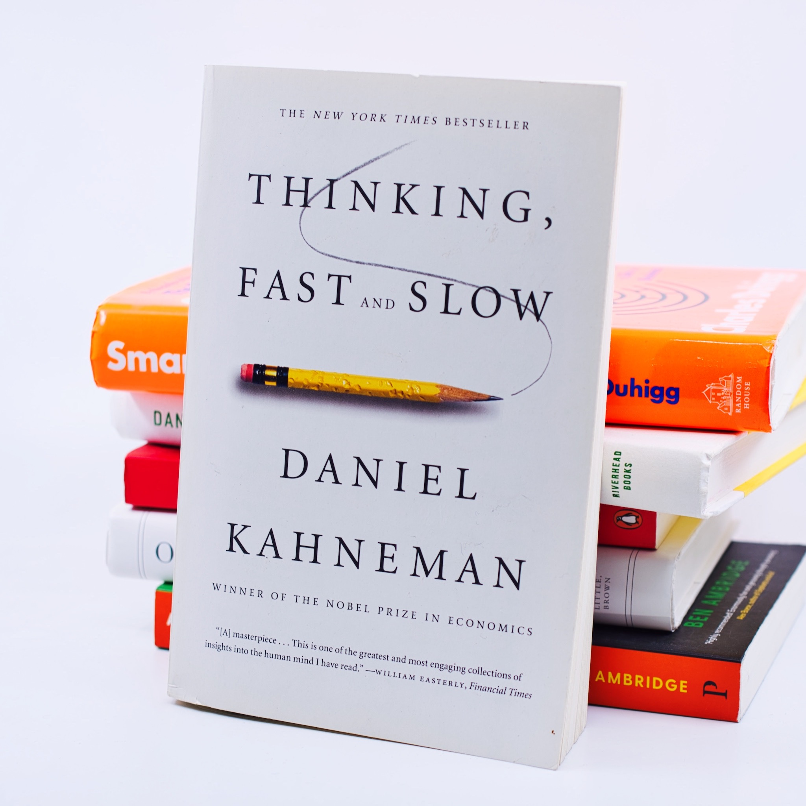

read'in
central london book club

about us
----------
We are an inclusive London-based book club, all are welcome here! We read a variety of nonfiction books ranging a wide breadth of subjects.
We also have a Facebook group where you can keep up with the community and suggest future books for the club.

testimonial
----------
"Attending Read'in is the highlight of my week - the discussions are lively and thought-provoking, and the selection of books we read is top-notch. I've made some friends for life through Read'in!"
~ Max, Software Engineer & self-proclaimed nonfiction bookworm